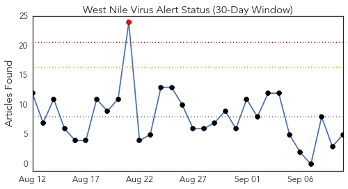
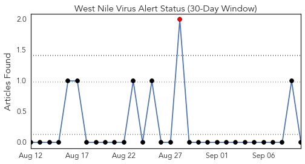
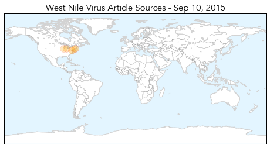

Influenza
30-Day Web Trend
1 alerts, 0 warnings

30-Day Twitter Trend
4 alerts, 0 warnings

Article Locations

Article Confidences

Top Articles:
- 0.997
- New Guidelines Call for Kids, Health Care Workers to Get Flu Shots
- 0.986
- Rockland Flu Vaccine Clinics Start Sept. 11
- 0.977
- Lubbock, South Plains, West Texas
- 0.967
- No H1N1 test facilities in Kashmir this flu season
- 0.956
- Union says Ontario nurses can’t be forced to wear masks in flu season - Toronto
- 0.947
- Cornwall Standard Freeholder
- 0.942
- Flu Shot Season Coming
- 0.926
- Nurse flu shot/mask rule shot down
- 0.920
- Belize Declared Free of Avian Influenza Virus
- 0.915
- Union says Ontario nurses can’t be forced to wear masks in flu season
- 0.911
- Flu shots arrive in southeast Wisconsin
- 0.909
- Union says Ontario nurses can't be forced to wear masks in flu season
- 0.904
- Union says Ontario nurses can't be forced to wear masks in flu season
- 0.903
- Nurses say they don't have to wear masks
- 0.903
- Nurses say they don't have to wear masks
- 0.901
- 'Vaccinate or mask' policy struck down by Ont. nurses' union
- 0.886
- Q Fever vaccine demand is only the "tip of the iceberg"
- 0.846
- Genetically modified chickens glow in the dark to stop bird flu
- 0.821
- Hong Kong's two-month Mers travel warning was excessive, says South Korean envoy
- 0.798
- Microbiologists wake up 'Frankenvirus' from Siberian wasteland
- 0.776
- Scientists Resurrects 30,000-year-old Virus
- 0.720
- The Reporter Newspaper – BAHA lifts alert for Avian Influenza in Cayo districtn
- 0.637
- Plans afoot to Revive Ancient Giant Virus, Mollivirus Sibericum
- 0.624
- Sinovac To Participate In Morgan Stanley Global Healthcare Conference
- 0.595
- Scientists Revive 30,000-Year-Old Giant Virus, Worry That Climate Change Will Eventually Do The Same
- 0.541
- Scientists to Reanimate Frozen 'Frankenvirus' Discovered in Siberia
Top Tweets:
-
No tweets found for Sep 10, 2015
West Nile Virus
30-Day Web Trend
1 alerts, 0 warnings

30-Day Twitter Trend
0 alerts, 0 warnings

Article Locations
Article Confidences
Top Articles:
- 0.960
- Yakima Health District Finds 5 Cases of Chikungunya in Yakima Co - NBC Right Now/KNDO/KNDU Tri-Cities, Yakima, WA
- 0.901
- 2 Bridgeport resident test positive for West Nile virus
- 0.808
- West Nile virus found in DeKalb County
- 0.710
- St. Clair County reports West Nile virus death
- 0.549
- Howard Beach man contracts West Nile
Top Tweets:
-
No tweets found for Sep 10, 2015